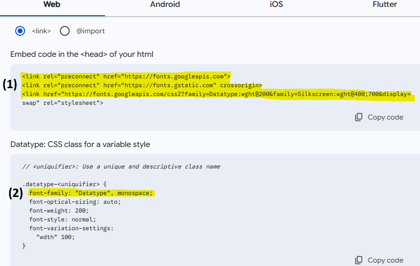
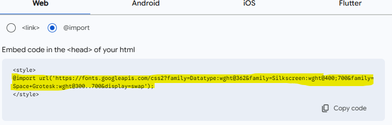
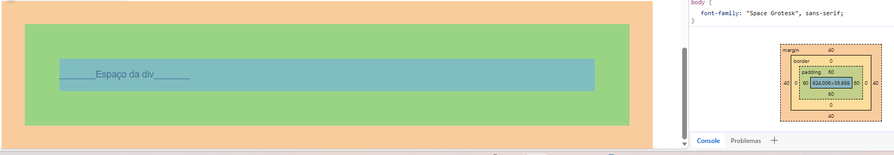

Continuo me chamando Cesar, e continuo nas aulas, mas agora estou aprendendo CSS, então seguindo a linha de raciocínio do HTML aqui eu vou aplicar tudo que eu aprendi nas aulas de CSS.
Vc consegue mudar a aparência usando uma TAG chamada "style" na própria página do HTML, porém a algumas diferenças, por exemplo, dentro da TAG não há mais a necessidade de usar o sinal de maior e menor para abrir a TAG do q vc quer alterar, vou usar o texto abaixo para editar como exemplo:
style>
h2{
font-size: 45px;
color: green;
text-align: center;
background-color: gray;
}
style/>
Nessa TAG style por exemplo eu utilizei o atributo:
"font-size" para aumentar o tamanho da letra
"color" para mudar a cor da letra
"text-align" para centralizar o texto
"background-color" para mudar a cor de fundo do texto
E como vc pode ver além do "h2" não ter os sinais de abertura e fechamento, se usa as cheves ( { } ) para abrir e fechar o código de edição
OBS: Vc consegue ver os códigos em qualquer site que vc entrar e qual estilo de fonte por exemplo o mesmo está usando para usar nos projetos, para isso é só vc clicar com o botão
direito do mouse no site e ir em "inspecionar" e depois clicar na setinha que esta ao lado esquerdo de "Elementos" e selecionar a aprte que vc tem interesse
Mesmo agente aprendendo essa forma de personalizar usando a TAG "style", essa não é a melhor forma de personalizar a sua página, só é indicada caso seja algo muito pequeno onde não ficará muito confuso, caso contrário é melhor abrir uma nova aba no VSCode para separar as coisa, e para isso lembre-se sempre de nomea-la com o final ".css" para o sistema entender que aquele é um arquivo CSS
Após a criação da nova aba vc precisa linkar a sua página com as edições q vc fará no CSS então vc precisa colocar em " < head> "
link rel="stylesheet" href="./nome-da-sua-aba.css"> Após isso, a sua página HTML estará entendendo q a sua nova aba CSS será pra ela
Vc consegue ter diferentes seletores no CSS um deles é apenas colocar a TAG do que vc for personalizar como: h3{ color:green} se vc fizer desta forma todos os títulos "h3" do seu site será pintado de verde, e isso serve para qualquer utra TAG q vc usar desta maneira, por isso se vc tiver vários títulos "h3" e quer estiliza-los individualmente é necessário outra forma
Para identifica-los individualmente vc precisa criar um "id" para cada item, assim quando vc estiver personalizando o CSS saberá em qual título vc quer mexer, mas diferente do
HTML q vc rastreia pelo "for" no CSS vc utiliza apenas uma # antes do id, por exemplo:
Se meu id for: id="titulo1" (Lembrando q o id vai dentro da TAG)
No CSS será: #titulo1 { color:green }
Ex:
Também tem a opção de "class", que é parecida com id porém é mais utilizada quando vc quer selecionar várias TAGs diferentes, e difente do id q vc idêntica com #, quando se
usa a class vc coloca " . ", exemplo:
HTML
h1 class="cor1"> Título 2 Exemplo h1>
h1 class="cor1"> Título 3 Exemplo h1>
h1 class="cor1"> /h1>
CSS
.class{
color:blue;
background-color:gray;
}
Ex: Se vc quer editar os titulos do seu site todos semelhantes basta usar o class para selecionar os titulos
Vc também pode fazer múltipla seleção tanto de class como de id apenas colocando uma vírgula e continuando a colocar oque vc quer, exemplo:
#titulo1, .cor1, p {
color:blue;
}
Dessa forma vc selecionou o id o class e todas as TAGs p
Você pode também por exemplo selecionar todos os itens dentro de uma div, por exemplo:
#div8 img { margin: 0; }
Nesse caso eu selecionei todas as imagens (img) da div, com o id="div8" (div8) e estou falando q não quero margem
Cores = Existem várias formas de colocar a cor, mas as mais comuns são Decimais - background-color: rgb(50, 50, 50); e Hexadecimais - color: #D399;
Exemplo:
Existem várias unidades de medida como cm e mm, mas na programação se usa majoritariamente o px q é o pixel
Mas também tem as Unidades Relativas que são úteis quando vc quer manter uma proporção de acordo com a tela que esta sendo aberta seu site, por exemplo:
Ja vimos como mudar a cor, porém para os textos tem várias personalizações úteis q é legal aprender, entre elas tem uma chamada font-family usada para alterar
a fonte geral do seu site, no google existem diversar fontes diferentes para colocar no seu site ( google fonts) e para fazer isso tem duas opções:
Após selecionar uma ou mais fonte no google fonts vc tem a opção de < link > e @ import, na opção de link basta vc copiar o código com a TAG de link que estará em um quadrado de seleção ( 1 ) e copia-lo no "head" do seu HTML, e após isso usar linha de código do "font-family" que estará em outro quadrado de seleção abaixo da seleção anterior ( 2 ), para alterar a fonte do texto selecionado:

Na opção de @import basta vc copiar o link da primeira caixa de seleção e colar no topo do seu arquivo CSS, e depois fazer o mesmo processo de colocar o font-family onde quiser alterar a fonte:

Após isso vc estará pronto para fazer as diversas edições possíveis no seu texto usando diferentes atributos, como por exemplo:
Exemplo: Este texto abaixo esta usando o espaçamento de letras, tamanho, centralizar texto, underline, text shadow e alterando a fonte com font family
A margin e o padding são tipos de margens, exemplo, se eu fizer uma div eu consigo colorir o background para ter uma visão melhor do padding:
_______Espaço da div_______
Esta frase acima esta em uma div com padding de 60 pixels e uma margem de 40 pixels, no navegador se vc clicar em inspecionar é possível ver todas as medidas que vc esta usando:

Se vc colocar elementos como padding, ou border o tamanho do seu elemento vai aumentar, por exemplo, se vc tem uma div com 100px de largura e 100px de altura, e vc adiciona 10px de padding,
o tamanho da sua div vai ser de 120px, e para que isso não aconteça, vc pode usar o box-sizing: border-box; que vai fazer com que o tamanho da div seja sempre o tamanho específico que vc quer,
e tudo adicionado posteriormente será deduzido do tamanho inicial da div
Normalmente se é usado em projetos logo no começo dos projetos dessa forma:
*{ box-sizing: border-box; } - Sendo o " * " um seletor universal que seleciona todos os elementos da página
A TAG "display" é usada para alterar o tipo de exibição de um elemento, os elementos já vêm por padrão "display: block;" porém existem outros atributos interessantes, vamos ver 3 deles agora:
Para a criação de um site é extremamente importante a criação do design do site, onde vai ficar cada botão, onde fica o menu, entre outros tópicos
E para fazer isso são muito utilizados principalmente duas fontes o site FIGMA e o ADOBE XD